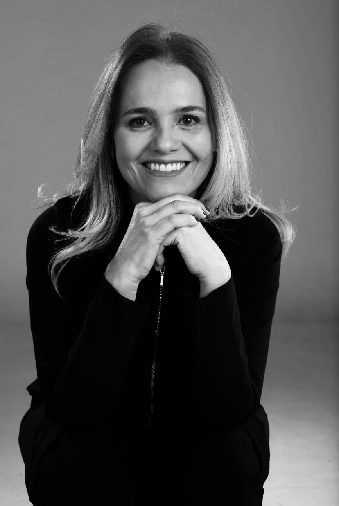

Ortodontia
Especialização pela UNESP e mais de 20 anos de prática clínica em Brasília. Tratamentos com aparelhos fixos e alinhadores para correção de má-oclusões, com foco em estética e funcionalidade a longo prazo.
Agendar avaliaçãoMSc · Brasília, DF · Membro CRO-DF desde 1993
Mais de 30 anos transformando sorrisos com excelência científica e cuidado humano. Especialista em Ortodontia, Harmonização Orofacial e instrutora clínica de pós-graduação — comprometida com resultados duradouros e tratamentos personalizados.

Especialista Certificada
Mestrado · UnB · 3 Especializações
Tratamentos de alto padrão, fundamentados em ciência e executados com atenção individualizada a cada paciente.
Especialização pela UNESP e mais de 20 anos de prática clínica em Brasília. Tratamentos com aparelhos fixos e alinhadores para correção de má-oclusões, com foco em estética e funcionalidade a longo prazo.
Agendar avaliaçãoEspecialização em Harmonização Orofacial pela FACSETE (2021–2023). Procedimentos estéticos minimamente invasivos para realçar e equilibrar os traços faciais com naturalidade e segurança.
Agendar avaliaçãoFormação complementar em Implantodontia pelo CEI (2013–2014, 240 horas). Integração com planejamento ortodôntico para resultados funcionais e estéticos completos.
Agendar avaliaçãoGraduada em Odontologia pela Universidade Federal de Uberlândia (1993), a Dra. Cristina construiu uma trajetória marcada pela busca constante de conhecimento. Especializou-se em Ortodontia e Ortopedia Facial pela UNESP, obteve o título de Mestre pela Universidade de Brasília e, mais recentemente, concluiu a especialização em Harmonização Orofacial.
Além da clínica particular que mantém em Brasília desde 2004, atuou como instrutora clínica de pós-graduação em instituições como IOA, Uningá e Clínica Privada Lago Sul, formando novos especialistas em ortodontia por mais de 14 anos.
Áreas de Interesse
Afiliações Profissionais
Uma base acadêmica sólida, construída ao longo de décadas nas melhores instituições do Brasil.
Graduação & Pós-Graduação
2021 – 2023
Faculdade de Sete Lagoas (FACSETE) — Uberlândia, MG
Especialização2015 – 2017
Universidade de Brasília (UnB) — Brasília, DF
Bolsista CAPES
1996 – 1999
Universidade Estadual Paulista (UNESP) — Araçatuba, SP
Especialização1989 – 1993
Universidade Federal de Uberlândia (UFU) — Uberlândia, MG
GraduaçãoTreinamento Clínico Adicional
2013 – 2014
CEI — Centro de Ensino em Implantodontia, Brasília, DF
240 horas2004
IBDM — Instituto Brasileiro de Direito Médico e Biodireito, Brasília, DF
156 horas1996 – 1998
UNESP — São Paulo, SP
1000 horas1995 – 1996
UNESP — Pré-clínica e Clínica
236 horas2004 – presente
Setor Sudoeste, Brasília, DF
Atual2022 – 2024
IOA — Instituto de Odontologia das Américas, João Pessoa, PB
Especialização em Ortodontia
2019 – 2022
IOA — Instituto de Odontologia das Américas, Brasília, DF
Especialização em Ortodontia
2010 – 2015
Universidade de Maringá (Uningá) — Campus Brasília, DF
Especialização em Ortodontia
2005 – 2019
Clínica Privada Lago Sul, Brasília, DF — Curso Modular Ertty Systems
1999 – 2005
IBO — Instituto Brasiliense de Odontologia, Brasília, DF
"Avaliação das Variáveis Cefalométricas Tridimensionais em Relação ao Tempo de Tratamento Ortodôntico"
Entre em contato para agendar uma avaliação ou tirar dúvidas sobre os tratamentos disponíveis.
Endereço
Setor Sudoeste Lote 3
Centro Clínico, 4/5 Sala 234
Sudoeste/Octogonal
Brasília – DF, 70673-416
Telefone / WhatsApp
(61) 98173-3211